FUNDAMENTALS OF PHOTOGRAPHY
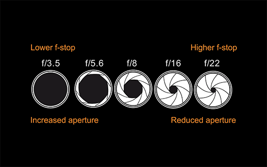
CAMERA BASICS #1: APERTURE
The first thing to consider when taking photographs with a digital camera is the effect that the aperture can have on your pictures.
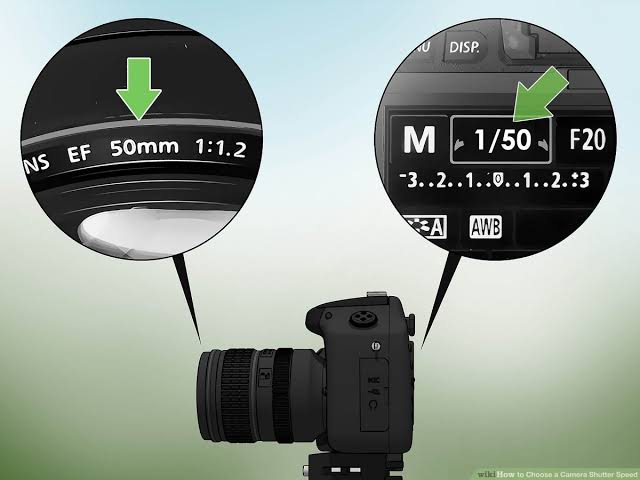
CAMERA BASICS #2: SHUTTER SPEED
When taking photographs, you want to have a good grasp of shutter speed and its effects on your photographs.
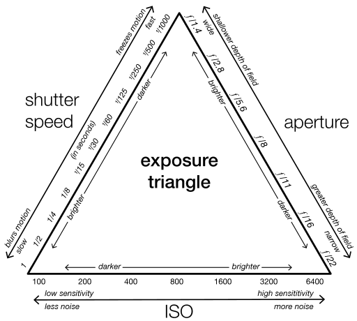
CAMERA BASICS #3: EXPOSURE
Exposure is one of the major factors that can make or break a picture.
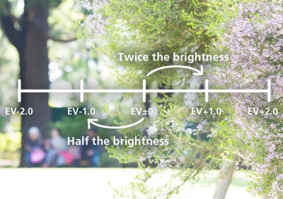
CAMERA BASICS #4: EXPOSURE COMPENSATION
Exposure compensation is a function you can use to change the exposure set by the camera (camera-determined correct exposure) into something of your own preference.
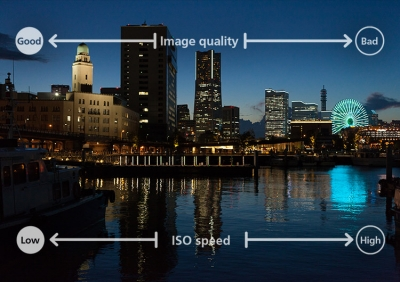
CAMERA BASICS #5: ISO SPEED
ISO speed plays an equally important role as aperture and shutter speed in its effect on exposure.
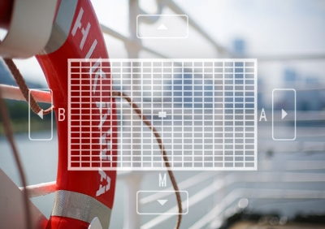
CAMERA BASICS #6: WHITE BALANCE
White balance is a feature that ensures that the colour white is reproduced accurately regardless of the type of lighting under which a photo is taken.
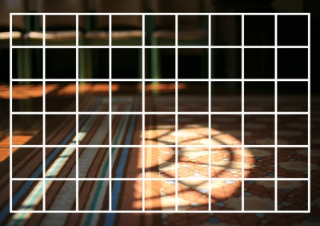
CAMERA BASICS #7: METERING
The metering function measures the brightness of a subject and decides how much exposure is best for the photo.
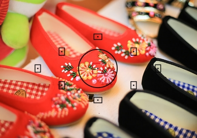
CAMERA BASICS #8: ESTABLISHING FOCUS
The one thing that enables the photographer to convey his photographic intent to the viewer is establishing the focus.
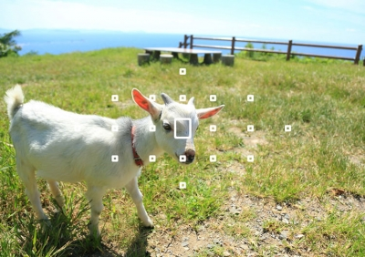
CAMERA BASICS #9: AF MODES
When establishing focus on a subject, it is vitally important to anticipate the subject’s movement and capture it at the right moment.
CAMERA BASICS #10: PICTURE STYLE
With the Picture Style function, you can adjust the colour tone and the contrast to enhance the charm and appeal of the subject.
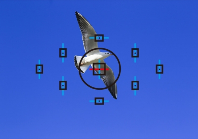
CAMERA BASICS #11: FACE DETECTION AF
Phase detection AF (also known as phase-difference detection AF) is the autofocus system used in viewfinder shooting on DSLR cameras.
CAMERA BASICS #12: THE VIEW FINDER
When it comes to shooting, a vital part of the camera is the viewfinder.
CAMERA BASICS #13: LIVE VIEW
The implementation of Dual Pixel CMOS AF in Canon's latest camera models have vastly improved shooting conditions in Live View.
CAMERA BASICS #14: POSITION AND ANGLE
The position and angle are two elements that greatly influence the outcome of your photos.
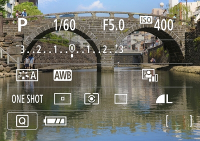
CAMERA BASICS #15: PROGRAM AE
The Program AE mode, a semi-automatic mode where the camera automatically sets the aperture and shutter speed.
CAMERA BASICS #16: APERTURE PRIORITY
The implementation of Dual Pixel CMOS AF in Canon's latest camera models have vastly improved shooting conditions in Live View.
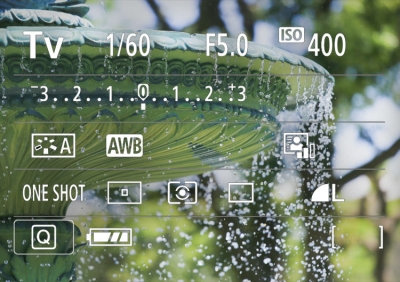
CAMERA BASICS #17: SHUTTER PRIORITY
Shutter-priority AE mode is a shooting mode that is useful for when you want to ‘freeze’ subjects in action.
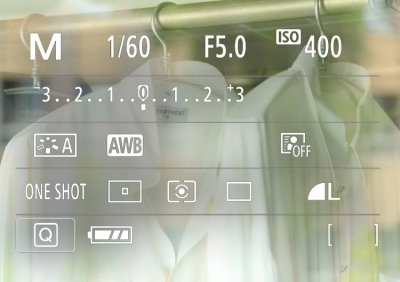
CAMERA BASICS #18: MANUAL EXPOSURE
If you want control over both the aperture and the shutter speed, Manual exposure mode is the way to go.
SEE MORE